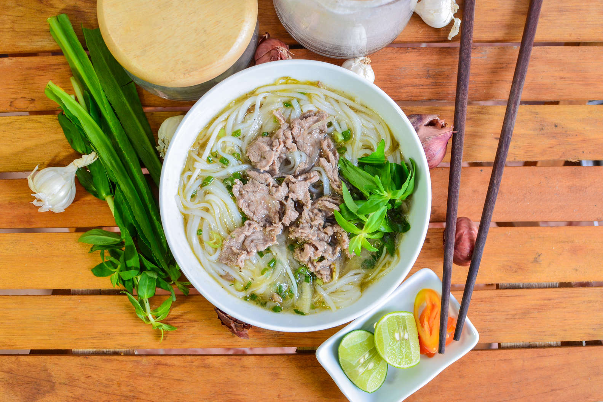

Pho Recipe

Description
Phở, pronounced "fuh," is a Vietnamese soup that is normally made with a
bone-beef broth, banh pho noodles, and thinly sliced beef, that's often
served with bean sprouts and other fresh herbs on the side. Not to be
confused with Japanese ramen, which is usually made with wheat noodles,
pho is made with rice noodles. It is important to note that there are many
variations of pho. The most common is pho nam, which originates in
Southern Vietnam, and pho bac, which is from Northern Vietnam and
considered to be the original pho.
Ingredients
- 4 lbs. beef soup bone
- 1 onion, unpeeled and cut in half
- 5 slices fresh ginger
- 1 tablespoon salt
- 2 pods star anise
- 21/2 tablespoons fish sauce
- 4 quarts water
- 1 (8 oz.) package dried rice noodles
- 11/2lbs beef top sirloin, thinly sliced
- 1/2 cup chopped cilantro
- 1 tablespoon chopped green onion
- 11/2cups bean sprouts
- 1 bunch Thai basil
- 1 lime, cut into 4 wedges
- 1/4 cup hoisin sauce (Optional)
- 1/4 cup chile-garlic sauce(such as Sriracha (Optional)
Steps
- Preheat oven to 425 degrees F (220 degrees C).
-
Place beef bones on a baking sheet and roast in the preheated oven until
browned, about 1 hour.
-
Place onion on a baking sheet and roast in the preheated oven until
blackened and soft, about 45 minutes.
-
Place bones, onion, ginger, salt, star anise, and fish sauce in a large
stockpot and cover with 4 quarts of water. Bring to a boil and reduce
heat to low. Simmer on low for 6 to 10 hours. Strain the broth into a
saucepan and set aside.
-
Place rice noodles in large bowl filled with room temperature water and
allow to soak for 1 hour. Bring a large pot of water to a boil and after
the noodles have soaked, place them in the boiling water for 1 minute.
Bring stock to a simmer.
-
Divide noodles among 4 serving bowls; top with sirloin, cilantro, and
green onion. Pour hot broth over the top. Stir and let sit until the
beef is partially cooked and no longer pink, 1 to 2 minutes. Serve with
bean sprouts, Thai basil, lime wedges, hoisin sauce, and chile-garlic
sauce on the side.